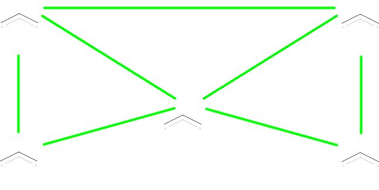
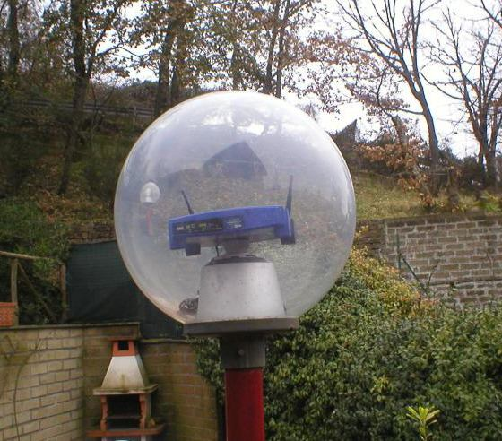
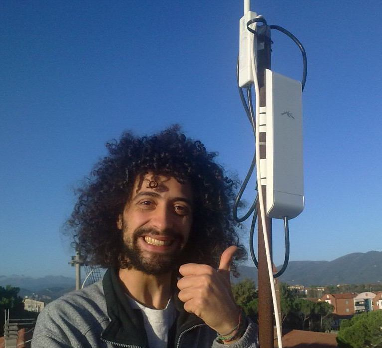
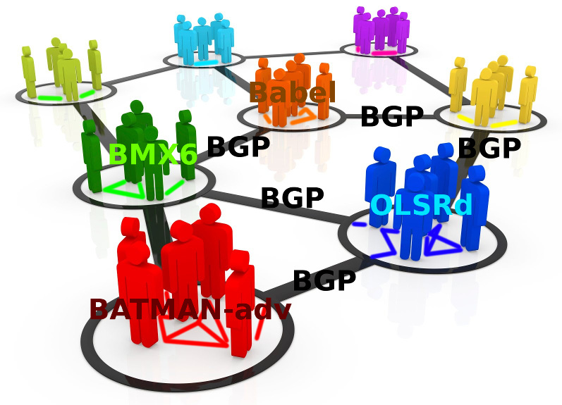
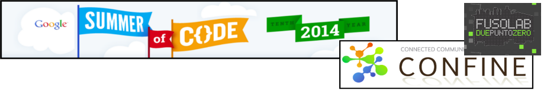

Ninux
Wireless Community Network
Presentato da Ilario Gelmetti (NinuxVerona) e Fabio Capriati (aka FaByS) (NinuxRoma).
Presso End Summer Camp, 2014-08-30, Venezia.
Creiamo una nuova rete.
Ma facciamola a modo nostro.
Fare una nuova rete? Perché?
- Smanettare!
- Nel nostro piccolo siamo radioamatori, programmatori e sistemisti!
- Performances!
- Per avere una connessione ganza coi nostri amici! Meno latenza, più banda!
- Attivismo!
- Libertà di comunicazione, censura e/o spegnimento totale impossibile, network neutrality, struttura fisica e gestione decentralizzata, software open-source.
- Paranoia.
- Per riprendere il controllo dei nostri dati costruiamoci il nostro cloud!
- Protezione civile.
- Per avere una rete che resista, ad esempio, ad un terremoto.
- Contro il digital divide.
- I provider non portano connettività in un paesino di montagna? Facciamolo noi!
Ok, ma com'è fatta?
Alla base di tutto sta un gruppo aperto di appassionati/e che si danno una mano sia dal punto di vista teorico...

Ok, ma com'è fatta?
...sia dal punto di vista pratico, per realizzare una rete dal basso!

Ok, ok, ma a livello hardware?
Nel modo più efficiente: ponti wireless sulle frequenze libere.
Ok, ok, ma a livello hardware?
Utilizzando dei router wireless!
No, meglio non così...
Ok, ok, ma a livello hardware?
Bensì con dei router da esterni, omnidirezionali o direzionali, coprono decine di km con alta banda e sono a basso prezzo!
WOW, e ora?
E ora la parte software, anzi firmware!
I router sono dei veri computer,
il loro sistema operativo preinstallato è molto limitante.
Installiamoci una distro Linux minimale!
L'installazione di questo firmware è semplice
quanto l'aggiornamento di quello originale.
E va configurato?
NO, le isole Ninux sviluppano dei firmware derivati da OpenWrt già pre-configurati!
Il più promettente è Libre-Mesh, frutto di una collaborazione tra
Ninux (Italia), Guifi (Catalogna) e Altermesh (Argentina).
Dunque NO, non c'è quasi nulla da configurare, tutto automagico!
Ad esempio cosa fa un firmware?
Ad esempio gestisce il routing dinamico,
fondamentale per la resilienza della rete.

Quali software gestiscono il routing?
Ogni "isola" Ninux sceglie come gestire il suo routing interno.
Il routing inter-isole (collegamenti VPN o diretti) si gestisce analogamente al traffico in inter-net (BGP).
Com'è configurata oggi Ninux?
- Roma, Firenze, Cosenza usano OLSRd con firmware Sburratore (AirOs based) e Scooreggione (OpenWrt based).
- Pisa usa BATMAN-adv con firmware eigenLab/eigenNet.
- Verona e Bologna usano il firmware Libre-Mesh.
- Le isole sono collegate tramite VPN Tinc con protocollo di routing BGP.
Libre-Mesh che usa?
Ad esempio Libre-Mesh utilizza:
- Batman-adv (layer 2, basato sui MAC address) a livello locale, ai client appare come uno switch di rete, i broadcast viaggiano.
Libre-Mesh che usa?
- BMX6 (layer 3, supporta IPv4 e IPv6) per collegare raggruppamenti di nodi.
La combinazione dei due protocolli "scala" bene.
Che servizi mi dà Ninux?
Ninux dà i servizi che i partecipanti portano in Ninux!
Ad esempio:
- Condivisione dati, archiviazione, backup
- Server di gioco
- Streaming di radio e tv locali
- Telefonia VoIP, email, chat, videoconferenze
- Social network locali e strumenti per la collaborazione
- Accesso ad Internet (ma se nessuno lo condivide non c'è!!!)
- ...spazio alla fantasia!
Ma c'è la connessione ad internet?
Lo scopo di Ninux NON è portare internet, bensì creare dal basso una rete decentralizzata. C'è internet solo se:
- se qualcuno condivide parte della banda ADSL
- se bypassiamo i provider diventando loro pari, questo è successo a Roma: Ninux è entrata in un Neutral Access Point!
- se usiamo IPv6: ogni partecipante può gestire una sottorete di IPv6 pubblici

Oltre alla rete, che fa la community?
- Sviluppo progetti opensource (Nodeshot, Libremesh, Olsr).
- Mentoring e Formazione (Google Summer of Code, Corsi).
- Progetti di ricerca: Confine, Open Data. 
Ed è legale?
Da pochi anni, ma lo è.
Per approfondimenti: http://ninux.org/LeggiWireless
Ma fa male?
Meno potente del cellulare (rispettando i limiti di legge),
molto più lontana dalla testa di un cellulare.

Mappa della rete: map.ninux.org
Contatti: contatti@ninux.org oppure le mailing list: ml.ninux.org
Ninux è a: Roma, Pisa, Viterbo, Udine, Vicenza, Mistretta, Firenze, Verona, Reggio Calabria, Catanzaro, Cosenza, Bologna, Siracusa, Trani...